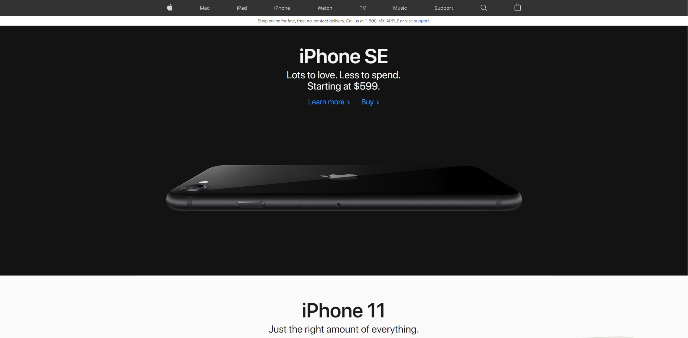

Sondage Spectaculaire d'Amin
Ceci est une page incroyable, si seulement Apple pouvait créer un site Web comme celui-ci
Allez voir
Apple's
site web, ils ont besoin de meilleurs ingénieurs, peut-être de l'Université d'Ottawa?

Information Personel
Prénom:
Nom de famille:
Qu'est-ce que vous aimez le mieux du site web d'apple
Les transitions en douceur
La simplicité du site
La cohérence du site internet
Quel but est-ce que le website accomplie le mieux
Fonctionnement Correct
Coherence
Efficacité
Utilisabilité
Fiabilité
Securité
Quel serait le meilleur type d'evaluations pour ce site web
Rapport de problèmes
Analyse de logs
Expériences scientifiques
Observations d'usagers
Sondages
tests d'utilisabilité
Quel page vous préférée?
Vous pouvez choisir plus qu'un (avec ctrl)
Mac
iPad
iPhone
Watch
TV
Music
Support
Comments:
Est-ce que le site web d'Apple est bon en considerant les six buts appris en class?
Fortement en accord
D'accord
Neutre
désaccord
Fortement en désaccord
SUBMIT your questionnaire
Site created by Amin Saber